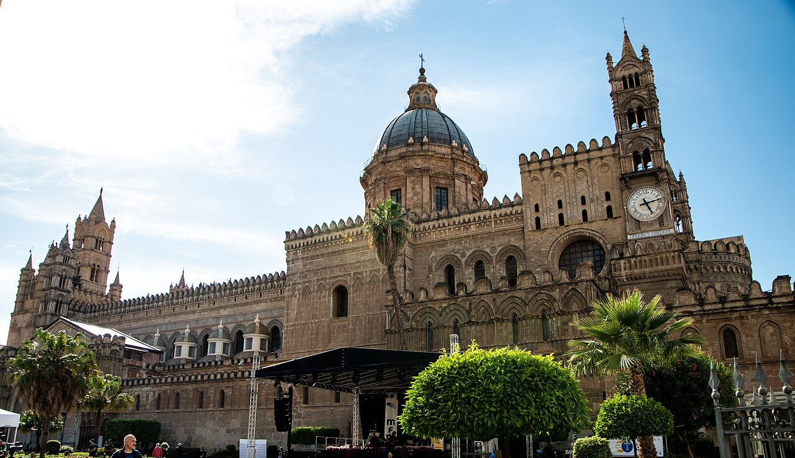

Segui le soglie, ritrova il mare
Una città, otto viaggiatori: scegli il tuo profilo e la guida si adatta a te — esperienze, consigli e un itinerario su misura.


Il tuo tour, fuori dalla cartolina
Scegli tempo, interesse e preferenza per tappe al coperto.
Che tipo di viaggiatore sei?
Scegli un profilo per filtrare esperienze e itinerari.
Esperienze su misura
Le esperienze possono appartenere a più profili.
Durate indicative; costo e accessibilità sono indicati solo quando documentati.
Il tuo giorno ideale
In viaggio, senza perdere tempo
Info pratiche
Muoversi
Pianifica gli spostamenti sul sito ufficiale del trasporto locale: linee, orari, tariffe e accessibilità possono cambiare.
Quando andare
Controlla meteo, calendario degli eventi e condizioni dei percorsi per le date del viaggio. L’affluenza varia: nessuna fascia oraria garantisce assenza di code.
Prenotare
Per musei, spettacoli, corsi e attività scegli prima una data e verifica disponibilità, tariffe e condizioni sul sito del gestore. Gli itinerari sono proposte, non prenotazioni.